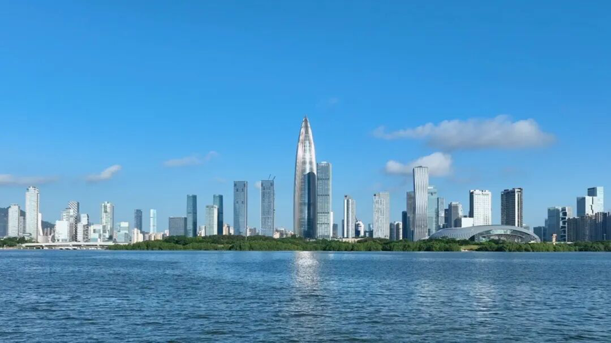

Why Shenzhen, Why Now
The Message Behind the Choice
In 1980, Shenzhen was a fishing village of 30,000 people. Deng Xiaoping chose it as China’s first Special Economic Zone with a famous remark that would come to define the city’s entire ethos: “I don’t care if it’s black or white, a cat that catches mice is a good cat.” This pragmatism — results over ideology, experimentation over orthodoxy — built the city that now houses Tencent, Huawei, DJI, and BYD. It built the city that files more international patents than any single city on Earth, that electrified its entire 16,000-bus fleet before any other megacity dared, that somehow found room for 1,200 parks inside the densest urban landscape in China.
China chose Shenzhen for APEC 2026 to send a message: the country’s next chapter is about innovation, openness, and the kind of economic experimentation that Shenzhen embodies.
Shenzhen’s neighborhoods each tell a different chapter of this story — from the tech laboratories of Nanshan to the street-food chaos of Luohu, from the convention-center polish of Futian to the ancient Hakka villages of Dapeng. Explore them on the city guide.

Shenzhen’s multilingual service centres are prepared for APEC 2026 arrivals.
This is not a city chosen for its skyline alone. Shenzhen was selected because its story is APEC’s story — the idea that economies grow fastest when they open up, when they let pragmatism guide policy, when they build bridges instead of walls. From Shanghai in 2001 to Beijing in 2014, each Chinese host city marked a different phase of the country’s economic evolution. Shenzhen marks the next one: the shift from manufacturing scale to innovation depth, from export-driven growth to technology leadership.